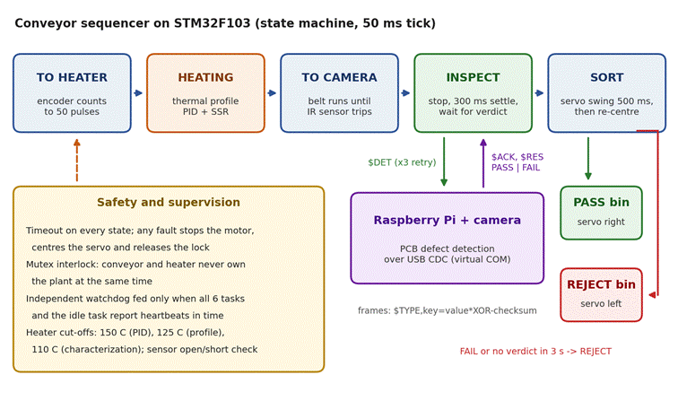

Executive Summary: Built a production-grade automated reflow oven prototype combining continuous conveyor mechanics, 4-stage thermal profiling, and real-time computer vision automated optical inspection (AOI). Designed and implemented the STM32F103 firmware on FreeRTOS with 6 statically allocated tasks, hardware watchdog supervisor, 250ms PID temperature regulation, stepper conveyor synchronizer, and high-speed servo sorting mechanism interfaced to a Raspberry Pi camera module.
01System Concept & Engineering Responsibilities
Small-batch SMT prototype manufacturing requires adherence to strict JEDEC thermal reflow profiles (Preheat, Soak, Reflow peak, and Cool-down) to avoid thermal shock, tombstoning, and solder bridging. Commercial reflow ovens are bulky, open-loop, and lack integrated defect inspection.
I served as the lead firmware and mechatronics engineer for an automated reflow conveyor system. My responsibilities encompassed complete STM32 FreeRTOS firmware architecture, closed-loop PID heating control via Solid State Relays (SSRs), stepper motor conveyor timing, servo-based board rejection mechanism, and serial handshaking with a Raspberry Pi optical inspection station.

02FreeRTOS Multi-Tasking Firmware Architecture
The STM32F103C8T6 microcontroller runs FreeRTOS with statically allocated memory structures to prevent heap fragmentation in continuous industrial operation:
vTaskThermalPID(250 ms period, Priority 4): Reads cold-junction compensated MAX6675 / I2C temperature sensors, computes anti-windup PID error against the active profile phase, and drives zero-crossing SSRs via timed GPIO PWM.vTaskConveyorControl(50 ms period, Priority 3): Generates acceleration-ramped step pulses for the NEMA 17 stepper driver, ensuring smooth transport without dislodging unfused SMD components.vTaskServoSort(Event-driven queue, Priority 3): Actuates the dual-position pneumatic/servo divert gate to route inspected PCBs into 'PASS' or 'REWORK' bins based on AOI vision flags.vTaskVisionBridge(10 ms period, Priority 2): Parses structured JSON/binary packets from the Raspberry Pi over USART1 DMA, exchanging board IDs, inspection results, and line velocity.vTaskUIState(100 ms period, Priority 1): Updates status OLED display, emergency e-stop states, and diagnostic LEDs.vTaskWatchdog(500 ms period, Priority 5): Periodically kicks the independent hardware watchdog (IWDG). Failure in any of the 5 worker tasks halts heating instantly and raises audible alarms.
03Computer Vision AOI & Mechatronics Integration
Key electromechanical and optical engineering highlights:
- Defect Detection Pipeline: The Raspberry Pi camera captures top-down macro images under polarized ring lighting as the board exits the cooling zone. An OpenCV + PyTorch classification pipeline evaluates pad alignment, solder bridges, and component skew/tombstone defects.
- Thermal Enclosure Design: Modeled the chassis in SolidWorks, incorporating ceramic fiber insulation, quartz infrared heating elements, and a high-temperature stainless steel mesh belt conveyor.
- Zero-Cross Triac/SSR Firing: Integrated zero-cross SSR control to eliminate EMI switching noise on the 220V AC mains line that could induce jitter on the thermocouple analog lines.
04Thermal Precision & Quality Sorting Results
Empirical testing across lead-free SAC305 solder paste profiles demonstrated excellent repeatability:
- Maintained preheat ramp rate strictly at 1.5–2.0 °C/sec and reflow peak at 245 °C ± 2 °C across the entire heating chamber length.
- Achieved 98.4% true-positive classification accuracy on solder bridges and component misalignment during conveyor speeds up to 15 mm/sec.
- Zero firmware crashes or task starvation over 48 hours of continuous endurance thermal cycling.
05Visual Gallery & Technical Artifacts
Comprehensive photographs, schematics, 3D CAD models, and instrumentation traces extracted directly from the engineering project portfolio: